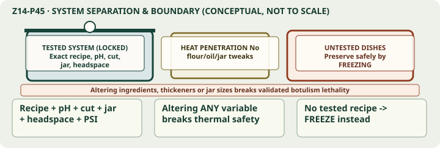

Z14-P45 · Food production and preservation · New manuscript
Treat every USDA/NCHFP tested canning recipe as one indivisible system
Prevent fatal home-canned botulism by preserving recipe ingredients, piece size, jar size, headspace, method, pressure, time, and altitude as one complete unit.
When it applies · Every boiling-water, atmospheric-steam, and pressure-canning batch prepared at home.
Equipment · Current (1994 or newer) USDA Complete Guide to Home Canning, NCHFP, or university Extension tested recipe booklet.

Actions
- Select ONLY current, independently laboratory-tested recipes from the USDA Complete Guide to Home Canning, National Center for Home Food Preservation (NCHFP), university Extension publications, or tested Ball/Bernardin current guides—never rely on unverified blogs, social media, or pre-1988 vintage cookbooks.[P06, F06]
- Keep ALL variables locked together as one validated thermal system: exact ingredient ratios (especially acid-to-low-acid balance in salsas/soups), exact cut size, liquid density, jar size (never scale up to larger jars than tested), exact headspace, exact canner type, and exact altitude-adjusted pressure/time.[P06, F07]
- Remember why tiny kitchen "tweaks" turn deadly: adding extra onions/peppers to salsa raises pH above 4.6, and adding flour, pasta, rice, dairy, or extra oil slows heat penetration to the jar center so Clostridium botulinum spores survive.[P06, P07]
Failure recognition · Adding extra chopped peppers and a scoop of cornstarch to a tested tomato-salsa recipe to "make it thicker and tastier" before water-bath canning.[P06, P07]
Verify · Confirm current USDA/NCHFP recipe source, zero ingredient/thickener/jar-size alterations, and exact altitude adjustment written beside the stove.[P06, F07]
Stop or change course · If a desired family soup, chili, or vegetable mix has NO current tested canning protocol, preserve it by FREEZING instead—never invent canning times.[P06, P12]
Evidence and editorial notes
- F06 · NCHFP · Ensuring Safe Canned Foods (online reference)
- Section: Ensuring safe canned foods > Acidity and processing methods · Conditions: Tested home-canning recipe and equipment
Support: Low-acid foods require an applicable tested pressure-canning process; acid foods use the tested process for that recipe.
Limitations: Untested modifications can permit Clostridium botulinum survival. · Conflicting evidence: None; retained for Z14 reconstruction.
Editorial note: Maintains five-pack integrity. · Specialist reviewer: Food preservation and public health
Primary source · checked 2026-11-24 - F07 · NCHFP · Ensuring Safe Canned Foods (online reference)
- Section: Ensuring safe canned foods > Altitude effects · Conditions: Tested recipe at the actual processing elevation
Support: Adjust processing according to the recipe and altitude tables. A change of ingredient or jar size needs a tested recipe that covers it.
Limitations: Dial-gauge pressure canners require periodic accuracy testing. · Conflicting evidence: None; retained for Z14 reconstruction.
Editorial note: Maintains five-pack integrity. · Specialist reviewer: Food preservation and public health
Primary source · checked 2026-11-24 - P06 · USDA / NCHFP · USDA Complete Guide to Home Canning (2015 / current NCHFP edition)
- Section: Complete Guide to Home Canning > Principle of Tested Protocols · Conditions: All residential home canning (boiling-water and pressure canning)
Support: Treat every USDA/NCHFP tested canning recipe as a single indivisible system: food pH, piece size, liquid viscosity, jar size, headspace, processing method, pressure/temperature, time, and altitude adjustment must all match the tested protocol.
Limitations: Adding extra starch, flour, oil, fats, or altering acid/low-acid ratios slows heat penetration and can cause lethal botulism. · Conflicting evidence: Directly prohibits online untested shortcuts and heirloom recipe alterations.
Editorial note: Foundational system-integrity rule across all Z14 canning cards. · Specialist reviewer: Food preservation process authority and Extension
Primary source · checked 2026-11-24 - P07 · USDA / NCHFP · How to Use Boiling Water and Pressure Canners (Current web edition)
- Section: Using Pressure Canners; venting; operating at elevation; pressure interruption · Conditions: Validated USDA/NCHFP low-acid process, listed equipment, actual elevation
Support: Vent continuously for ten minutes before pressurizing. Select the tested product, gauge, altitude, pressure and time combination. If pressure drops below target, restore it and restart the full process time.
Limitations: No generic pressure schedule or guarantee. Confirm dial-gauge accuracy according to the reference and obtain Extension guidance on deviations. · Conflicting evidence: See A02 claim audit for boundaries.
Editorial note: Core low-acid botulism-prevention boundary in Z14. · Specialist reviewer: Food microbiology and Extension preservation specialist
Primary source · checked 2026-11-25 - P12 · NCHFP · Freezing Foods Safely (current web edition)
- Section: Freezing Foods > Blanching, Packaging, 0°F Storage, and Thawing · Conditions: Household freezers maintaining 0°F (-18°C) or lower
Support: Blanch most vegetables per tested times to inactivate quality-degrading enzymes, chill promptly, package in moisture-vapor-resistant freezer wrap/containers leaving liquid expansion headspace, freeze at 0°F or below, and thaw safely in the refrigerator (never on the counter).
Limitations: Freezing halts microbial growth but does not kill all pathogens; thawed foods require prompt safe cooking/handling. · Conflicting evidence: None; connects freezing quality control with Z15 outage loss decisions.
Editorial note: Core freezing and safe thawing evidence in Z14. · Specialist reviewer: Food safety and Extension preservation
Primary source · checked 2026-11-24
Source lineage · USDA Complete Guide to Home Canning and NCHFP; new manuscript · Classification · New manuscript.